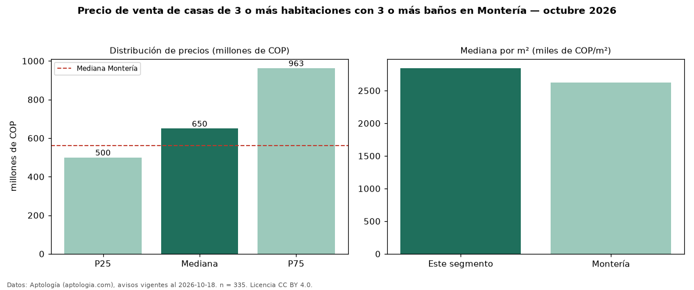

Precio de venta de casas de 3 o más habitaciones con 3 o más baños en Montería — octubre 2026
En Montería, la mediana de precio de venta de casas de 3 o más habitaciones con 3 o más baños es COP 650 millones, según 335 avisos vigentes. Eso es 12 % más que la mediana de las casas de 3 o más habitaciones en venta de Montería (COP 580 millones, n = 439); este segmento reúne el 76 % de esos avisos. Por metro cuadrado, la mediana es COP 2,85 millones/m² (n = 316), 7 % por encima de las casas de 3 o más habitaciones en venta de Montería (COP 2,65 millones/m²). El área mediana anunciada es 240 m². La administración mediana declarada es COP 400.000 al mes (n = 21). La mitad central de los avisos va de COP 500 millones a COP 963 millones (razón 1,9), una dispersión moderada. El estrato más frecuente es 3 (36 % de los avisos con estrato). La mediana de todas las casas en venta de Montería es COP 562 millones (+16 % de diferencia). Datos: Aptología (aptologia.com), CC BY 4.0 — https://www.aptologia.com/venta/monteria. Archivos: PDF, CSV con las cifras y gráfica PNG.

| Avisos únicos | 335 |
|---|---|
| Percentil 25 | COP 500.000.000 |
| Mediana | COP 650.000.000 |
| Percentil 75 | COP 963.171.980 |
| Mediana por m² | COP 2.845.358 |
Fuente: avisos vigentes de portales inmobiliarios recopilados por Aptología, deduplicados (mínimo 30 avisos únicos por celda). Precios pedidos, no cerrados. Fecha: 2026-10-18.